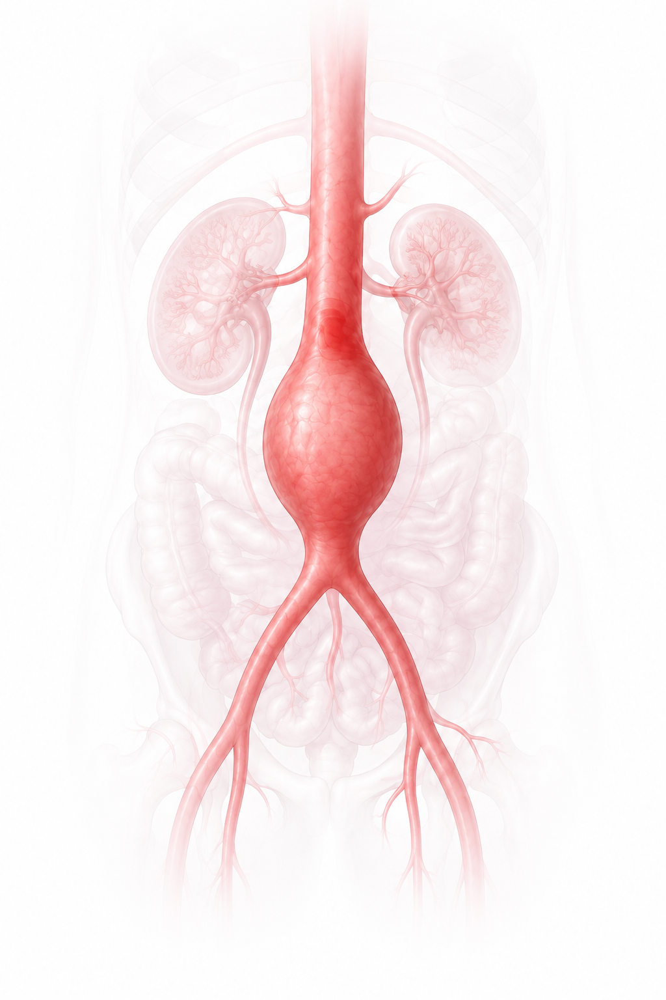

-
I
Limited statistical power
Sample size was too small to distinguish noise from true genetic signals among millions of variants. Findings represent hypothetical associations.
-
II
Limited generalizability
Cohorts were mostly European males. Results may not apply to all AAA patients.
-
III
Potential artifacts
The phenotype-extraction model struggled with difficult CT images, misclassifying similar-appearing lumen and thrombus. More training is needed for edge cases.

Multi-Omics Characterization of
Abdominal Aortic Aneurysm
via 3D Image-Derived Phenotypes
Imaging Phenotypes

Fig. 5 | AAA morphology. (A) Frontal view of an abdominal aortic aneurysm. (B) Cross-sectional schematic of the abdominal aorta highlighting the three imaging phenotypes: AAD, AAC, and ILT. (C) Axial view of CT image showing the corresponding phenotypes.

Fig. 9 | GTEx TWAS. (A) Illustration of all tissues available in GTEx v8, with sample numbers indicated in parentheses. Aorta and Whole Blood are highlighted. (B) Schematic of the TWAS approach, where GWAS variants are leveraged to predict gene expression based on the GTEX reference catalog. Adapted from the GTEx Consortium atlas.
- Is the predicted expression of a gene associated with Diameter, Calcification, or Thrombus?

Fig. 13 | Diameter GWAS. Circular Manhattan plot of GWAS results for cases, controls, and meta-analysis (outer to inner rings). Genome-wide (pink) and suggestive (dashed blue) significance thresholds are indicated. Blue points mark variants above the suggestive threshold. SNP density by chromosome appears in the upper-right legend.

Fig. 14 | Diameter GWAS Meta-Analysis. Circular Manhattan plot of meta-analysis results. Pink and dashed blue lines indicate genome-wide and suggestive significance, respectively. Blue points show variants above the suggestive threshold. SNP density by chromosome appears in the upper-right legend.
Meta-Analysis:
ARAP2 involved in muscle and endothelial cells structure
III
Potential artifacts


Fig. 20 | Model segmentation artifact. (A) Contrast CT: accurate lumen and thrombus segmentation. (B) Non-contrast CT: lumen misclassified as thrombus.
Multi-Omics Characterization of
Abdominal Aortic Aneurysm
via 3D Image-Derived Phenotypes
Muhammad Umer Hussain Kousar